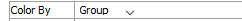
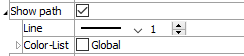
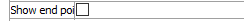

追踪颗粒绘图项
说明
显示释放到流体流场中的颗粒的路径。
属性
按…着色

设置追踪颗粒是按统一颜色着色，还是按分组着色。
按…着色：选择“统一”或“分组”。
显示路径

控制追踪颗粒路径的显示。
显示路径：显示追踪颗粒的路径（勾选）。
线：设置用于表示轨迹的线的选项（详情请参见标准的 线控件（line control））。
颜色列表：设置用于勾画轨迹的颜色（详情请参见标准的 颜色列表控件（color-list control））。
显示终点

指示颗粒的终点。
显示终点：显示（勾选）颗粒终点。
透明度

设置绘图项的透明度。详情请参见标准的 透明度（transparency） 控件说明。
图例

设置绘图图例中该项目的标签。详情请参见标准的 图例（legend） 控件说明。
在 标题 下方，追踪颗粒绘图项还为 数量 提供控件。
| 这些内容对您有帮助吗？… | FLAC3D © 2019, Itasca | 原文更新于 2020 年 10 月 8 日 |